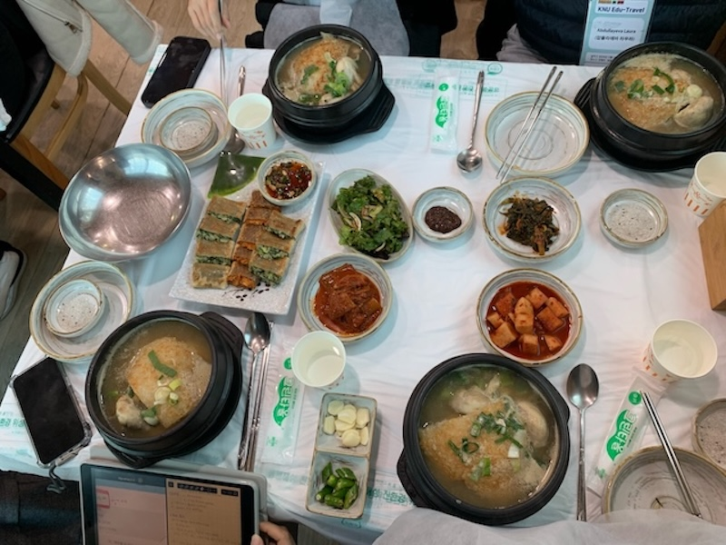

My Exchange to South Korea
A semester of change, challenge, and discovery.
Arriving in South Korea felt like stepping into a dream and a maze all at once. The first few days were filled with neon signs, unfamiliar sounds, and a beautiful sense of disorientation. I was both terrified and thrilled. I had never lived this far from home, and it felt like the world had suddenly become much bigger and more immediate.
At university, lectures were a mix of Korean and English, and I quickly learned that confidence doesn’t come from knowing everything—it comes from showing up even when you don’t. Every class, café, and market visit became an opportunity to stretch myself, learn a new phrase, or just laugh off the awkwardness.
Beyond classes, I wandered through old palaces, hiked up chilly hills to catch city views, and fell in love with tteokbokki, especially from street vendors late at night. There’s a kind of peace that comes from figuring things out on your own, in a place that owes you nothing and welcomes you anyway.
I returned home changed—not in a loud way, but in quiet, lasting shifts. I became more patient with myself, more curious about others, and more aware of how much beauty exists outside of what I already knew.